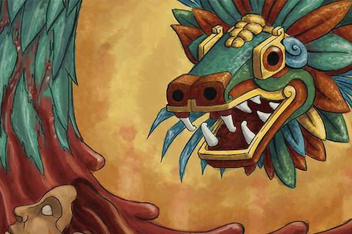

Arból nodriza
Destinado para los niños que no habían vivido el poseer consiencia. Este era un lugar donde nacían árboles nodrizas, con senos maternos como frutos de los que brotaba leche (Chichihualcuahco), en el que moraban los pequeños en espera de volver a la tierra cuando la raza que habita la toerra sea destruida. De esta forma, al extinguirse el quinto sol, de la muerte renacería la vida.
Anda merodeando por aquí
